16.1 다른 Region내 VCN간 연결하기
요구사항에 따라 부서, 회사 단위로 서로 다른 VCN을 구성하여 사용하게 됩니다. 이때 필요에 따라 서로 다른 VCN간에 통신해야 하는 필요가 생기게 됩니다. VCN간 연결하는 것은 Peering이라고 하며 크게 두 가지 경우가 있습니다. 여기서는 Region간 DR 구성을 위해 많이 필요하게 될 Remote VCN Peering에 대해서 알아봅니다.
- Local VCN Peering: 같은 Region내 VCN을 연결하는 경우, 같은 Tenancy는 물론 서로 다른 Tenancy 간에도 연결이 가능합니다.
- Remote VCN Peering: 다른 Region내 VCN을 연결하는 경우, 일반적으로 Region간 DR 구성을 위해서 필요합니다.
※ 직접 연결된 두 VCN간에는 IP Range 즉 CIDR가 겹치지 않아야 합니다. Peering을 하기 위한 추가 권한 등 자세한 사항은 공식 문서를 참조하기 바랍니다.
※ Peering을 위해서는 관련된 IAM Policy 권한이 있어야 하지만, 본 내용은 단일 Region내에 한 명의 전체 관리자가 설정한다는 전제라서 추가 Policy 설정이 필요하지 않았습니다. 실제 작업시 다른 상황인 경우에는 공식 문서를 참조하여 진행하기 바랍니다.
Remote VCN Peering
Region 단위로 발생할 수 있는 위험 및 법적인 문제나 다른 다양한 비즈니스적으로 충족하기 위해 DR 센터를 구축하게 됩니다. 아래 그림과 같이 OCI 상에서도 두 개의 Region을 통해 DR 센터를 구축할 수 있으며, 이때 두 Region의 네트워크 연결이 필요하며 이때 Remote VCN Peering 기능을 사용하게 됩니다. 아래 그림은 Remote VCN Peering을 구성하는 예제입니다.
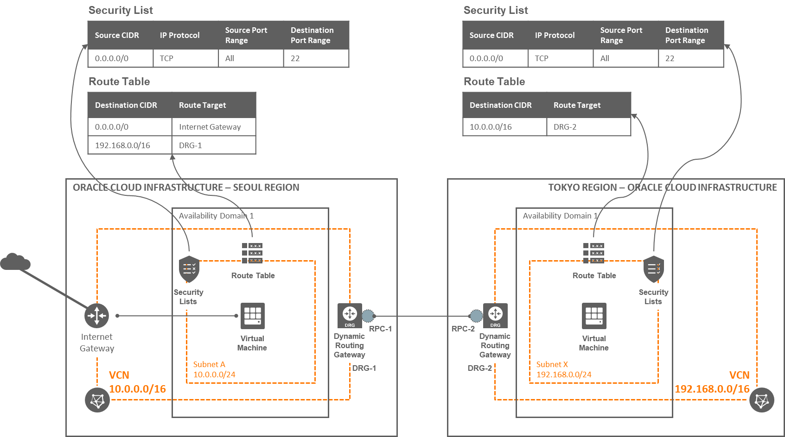
Step 1. 첫 번째 Region에 VCN 및 Compute 만들기
VCN 만들기
오른쪽 위 Region 선택 메뉴에서 첫 번째 Region을 선택합니다.
OCI 콘솔에서 내비게이션 메뉴를 엽니다. [Core Infrastructure] >> [Networking] >> [Virtual Cloud Networks] 항목으로 이동합니다.
[Create Virtual Cloud Network] 클릭
생성 정보 입력
- CREATE IN COMPARTMENT: “Sandbox” Compartment 선택
- Name: “VCN-1” 입력
- CREATE VIRTUAL CLOUD NETWORK ONLY 선택
- CIDR BLOCK: 10.0.0.0/16
다이얼로 최하단으로 스크롤 하여 [Create Virtual Cloud Network] 클릭합니다.
다이얼로그에서 확인할 수 있지만, 아래 자원들과 추가적인 자원들이 생성됩니다.
- Virtual Cloud Network
- CIDR block range : 10.0.0.0/16
- Default Route Table
- Default Security List
- Default DHCP Option
- Virtual Cloud Network
Public Subnet 만들기
왼쪽 [Resources] >> [Subnets] 클릭
[Create Subnet] 클릭
생성정보 입력
- Name: 이름 입력, Subnet-A
- Subnet Type: REGIONAL을 선택
- CIDR Block: 10.0.0.0/24
- Route Table: Default Route Table 선택
- Subnet Access: PUBLIC SUBNET 선택
- DNS Resolution: 기본값 선택, “Use DNS Hostnames in this Subnet”
- DHCP Options: Default DHCP Options 선택
- Security Lists: Default Security List 선택
최하단으로 스크롤하여 [Create Subnet] 클릭
생성완료
Internet Gateway 만들기
왼쪽 [Resources] >> [Internet Gateways] 클릭
[Create Internet Gateway] 클릭
생성정보 입력
- Name: 이름 입력, 예, Internet Gateway for VCN-1
최하단으로 스크롤하여 [Create Internet Gateway] 클릭
생성완료
Routing Table 업데이트
왼쪽 [Resources] >> [Route Tables] 클릭
인터넷에서 접속할 수 있도록 모든 요청이 Internet Gateway로 라우팅 될 수 있도록 추가합니다.
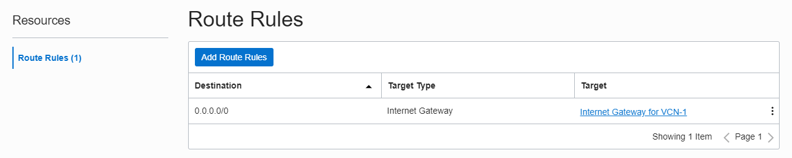
Linux Compute 인스턴스 만들기
- 생성한 VCN내에 Linux Compute 인스턴스를 하나 생성합니다.
- Name: 이름 입력, 예를 들어 linux-1
- Availability Domain: AD1
- Operating System: 디폴트 선택, Oracle Linux 7.x.
- Instance Type: Virtual Machine
- Instance Shape: VM.Standard2.1
- Subnet: 앞서 만들어진 Subnet-A
Step 2. 두 번째 Region에 VCN 및 Compute 만들기
VCN 만들기
오른쪽 위 Region 선택 메뉴에서 두 번째 Region을 선택합니다.
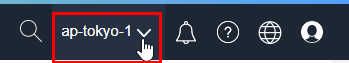앞서와 같은 방법으로 VCN을 만듭니다.
- CREATE IN COMPARTMENT: “Sandbox” Compartment 선택
- Name: “VCN-2” 입력
- CREATE VIRTUAL CLOUD NETWORK ONLY 선택
- CIDR BLOCK: 192.168.0.0/16
- 앞서 만든 첫번째 Region의 VCN과 겹치는 부분이 없게 만듭니다.
- 앞서 만든 첫번째 Region의 VCN과 겹치는 부분이 없게 만듭니다.
Private Subnet 만들기
- 앞서와 같은 방법으로 Subnet을 만듭니다.
- Name: 이름 입력, Subnet-X
- Subnet Type: REGIONAL을 선택
- CIDR Block: 192.168.0.0/24
- Route Table: Default Route Table 선택
- Subnet Access: Private Subnet 선택
- DNS Resolution: 기본값 선택, “Use DNS Hostnames in this Subnet”
- DHCP Options: Default DHCP Options 선택
- Security Lists: Default Security List 선택
Linux Compute 인스턴스 만들기
- 생성한 VCN내에 Linux Compute 인스턴스를 하나 생성합니다.
- Name: 이름 입력, 예를 들어 linux-2
- Availability Domain: AD1
- Operating System: 디폴트 선택, Oracle Linux 7.x.
- Instance Type: Virtual Machine
- Instance Shape: VM.Standard2.1
- Subnet: 앞서 만들어진 Subnet-X
Step 3. 첫 번째 Region - DRG 및 RPC 만들기
오른쪽 위 Region 선택 메뉴에서 첫 번째 Region을 선택합니다.
OCI 콘솔에서 내비게이션 메뉴를 엽니다. [Core Infrastructure] >> [Networking] >> [Dynamic Routing Gateways] 항목으로 이동합니다.
[Create Dynamic Routing Gateway] 클릭
생성 정보 입력
- CREATE IN COMPARTMENT: “Sandbox” Compartment 선택
- Name: “DRG-1” 입력
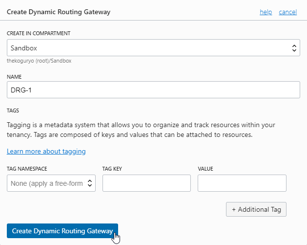
다이얼로 최하단으로 스크롤 하여 [Create Dynamic Routing Gateway] 클릭합니다.
생성된 DRG-1을 클릭합니다.
왼쪽 [Resources] >> [Remote Peering Connections] 클릭
[Create Remote Peering Connections] 클릭
생성 정보 입력
- Name: “RPC-1” 입력
- CREATE IN COMPARTMENT: “Sandbox” Compartment 선택
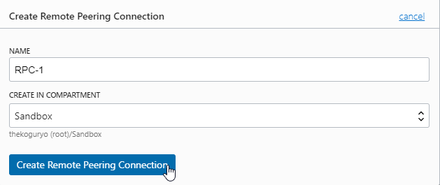
다이얼로 최하단으로 스크롤 하여 [Create Remote Peering Connections] 클릭합니다.
생성완료
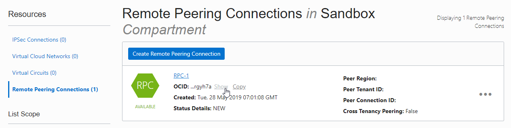다음 정보를 확인합니다.
- VCN이 속한 Region 이름: 예, ap-seoul-1
- 생성한 RPC의 OCID: 예, ocid1.remotepeeringconnection.oc1.ap-seoul-1.~~~~
- VCN에서 연결할 Subnet의 CIDR 블럭: 예, 10.0.0.0/24
Step 4. 두 번째 Region - DRG 및 RPC 만들기
오른쪽 위 Region 선택 메뉴에서 두 번째 Region을 선택합니다.
앞서와 같은 방법으로 Dynamic Routing Gateway를 만듭니다.
- CREATE IN COMPARTMENT: “Sandbox” Compartment 선택
- Name: “DRG-2” 입력
DRG-1을 클릭하여 앞서와 같은 방법으로 Remote Peering Connection을 만듭니다.
- Name: “RPC-2” 입력
- CREATE IN COMPARTMENT: “Sandbox” Compartment 선택
만들어진 RPC 오른쪽 액션 메뉴에서 Establish Connection을 클릭합니다.
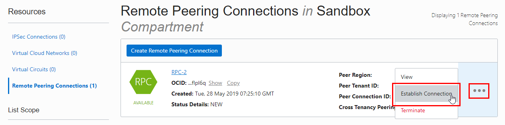연결 요청
- REGION: 첫 번째 Region 이름 선택
- REMOTE PEERING CONNECTION ID: 첫 번째 Region에 생성한 RPC의 OCID 복사
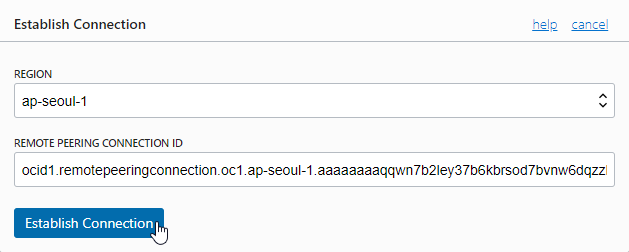
연결이 완료되면 PEERED 상태로 변경됩니다.
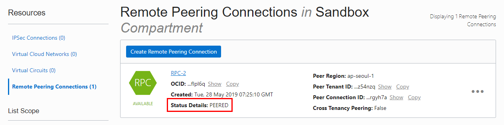
Step 5. 첫 번째 Region - VCN 설정
- 오른쪽 위 Region 선택 메뉴에서 첫 번째 Region을 선택합니다.
VCN에 DRG 붙이기
앞서 생성한 VCN-1 설정화면으로 이동합니다.
왼쪽 [Resources] >> [Dynamic Routing Gateways] 클릭
Attach Dynamic Routing Gateway 클릭
VCN에 부착할 Dynamic Routing Gateway로 앞서 만들고 설정한 DRG-1을 선택합니다.
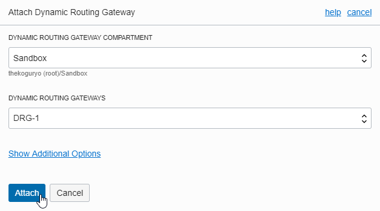
Route Table 업데이트
연결된 DRG-RPC를 통해 대상 VCN으로 라우팅 되도록 아래와 같이 라우팅 테이블을 업데이트하면 됩니다.
- VCN 전체 또는 VCN내 일부 Subnet의 CIDR를 지정해도 됩니다.
대상 VCN의 Default Route Table 화면으로 이동합니다.
VCN-2의 CIDR 블럭에 대해서 설정한 DRG-1로 라우팅하는 규칙을 다음과 같이 추가합니다.
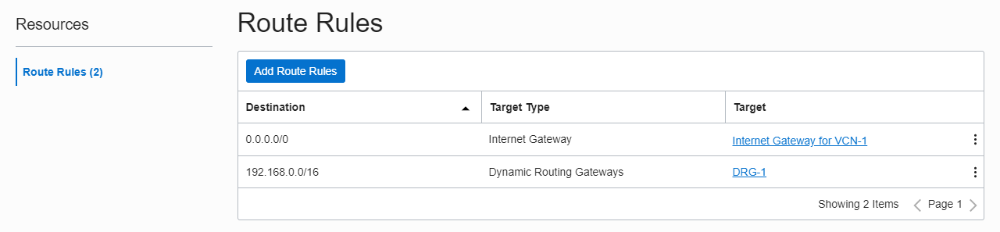
Security List 업데이트
VCN에 Subnet에 설정한 보안 규칙도 관련 Security List에서 필요하면 추가 설정하면 됩니다.
여기서는 Default Security List로 수신은 22 포트, 송신은 모두 열려있는 상태입니다.
Step 6. 두 번째 Region - VCN 설정
- 오른쪽 위 Region 선택 메뉴에서 두 번째 Region을 선택합니다.
VCN에 DRG 붙이기
앞서 생성한 VCN-2 설정화면으로 이동합니다.
왼쪽 [Resources] >> [Dynamic Routing Gateways] 클릭
Attach Dynamic Routing Gateway 클릭
VCN에 부착할 Dynamic Routing Gateway로 앞서 만들고 설정한 DRG-2을 선택합니다.
Route Table 업데이트
연결된 DRG-RPC를 통해 대상 VCN으로 라우팅 되도록 아래와 같이 라우팅 테이블을 업데이트하면 됩니다.
- VCN 전체 또는 VCN내 일부 Subnet의 CIDR를 지정해도 됩니다.
대상 VCN의 Default Route Table 화면으로 이동합니다.
VCN-2의 CIDR 블럭에 대해서 설정한 DRG-1로 라우팅하는 규칙을 다음과 같이 추가합니다.
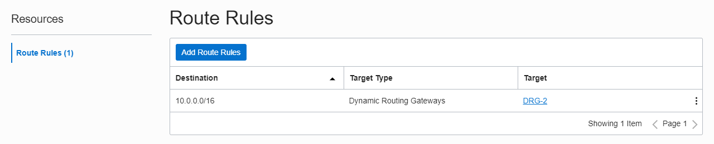
Security List 업데이트
VCN에 Subnet에 설정한 보안 규칙도 관련 Security List에서 필요하면 추가 설정하면 됩니다.
여기서는 Default Security List로 수신은 22 포트, 송신은 모두 열려있는 상태입니다.
Step 7. 접속 테스트
앞서 첫번째 Region에 만든 linux-1 서버에 SSH로 접속합니다.
아래와 같이 첫 번째 Region에 있는 linux-1 서버에서 두 번째 Region에 있는 linux-2의 Private IP로 접속되는 것을 확인 할 수 있습니다.
> ssh -i privateKey opc@132.145.80.XXX X11 forwarding request failed on channel 0 Last login: Wed May 29 01:46:54 2019 from 223.33.164.XXX [opc@linux-1 ~]$ hostname -f linux-1.subneta.vcn1.oraclevcn.com [opc@linux-1 ~]$ ssh -i privateKey opc@192.168.0.2 Last login: Wed May 29 01:47:48 2019 from 10.0.0.2 [opc@linux-2 ~]$ hostname -f linux-2.subnetx.vcn2.oraclevcn.com [opc@linux-2 ~]$
** 이 글은 개인으로서, 개인의 시간을 할애하여 작성된 글입니다. 글의 내용에 오류가 있을 수 있으며, 글 속의 의견은 개인적인 의견입니다. **